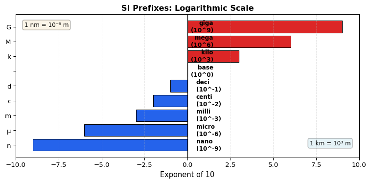
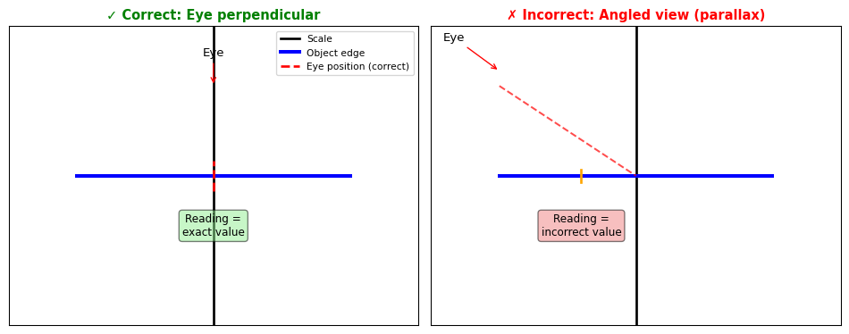
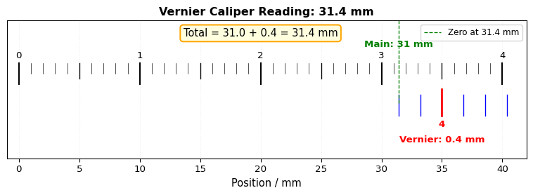
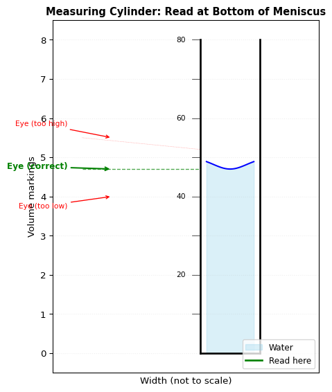
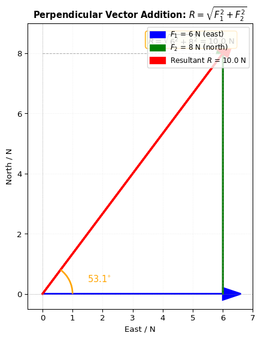
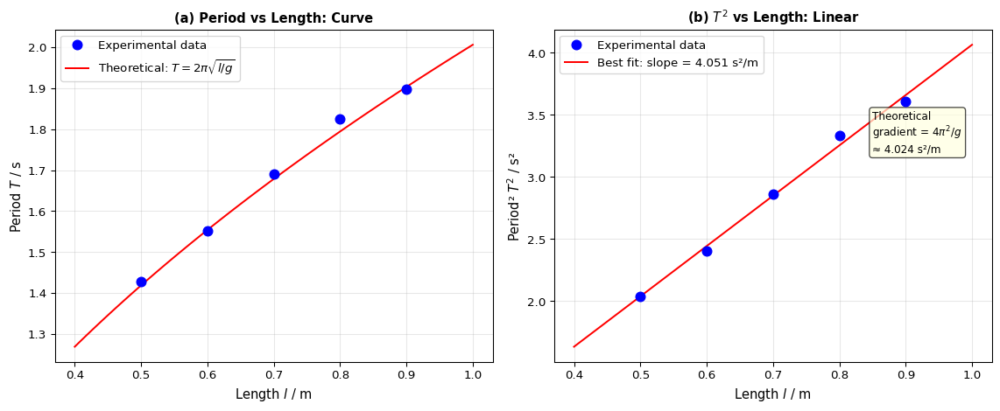

4 Measurement of Physical Quantities
4.1 Learning Objectives
4.1.1 Core Content
By the end of this chapter, you will be able to:
Describe the use of rulers and measuring cylinders to find a length or a volume
Describe how to measure a variety of time intervals using clocks and digital timers
Determine an average value for a small distance and for a short interval of time by measuring multiples (including the period of oscillation of a pendulum)
4.1.2 Supplement (Extended)
By the end of this chapter, you will be able to:
Understand that a scalar quantity has magnitude (size) only and that a vector quantity has both magnitude and direction
Know that the following quantities are scalars: distance, speed, time, mass, energy and temperature
Know that the following quantities are vectors: force, weight, velocity, acceleration, momentum, electric field strength and gravitational field strength
Determine, by calculation or graphically, the resultant of two vectors at right angles, limited to forces or velocities only
4.2 Key Concepts
4.2.1 Physical Quantities and SI Units
A physical quantity is a quantity that can be measured. It consists of two essential components:
Numerical magnitude: the number that indicates the size or amount
Unit: the standard of measurement for comparison
Example: In “the height is 3.8 m”:
3.8is the numerical magnitudem(metre) is the unit
There are seven base quantities in the International System of Units (SI):
| Base Quantity | SI Unit | Symbol |
|---|---|---|
| Length | metre | m |
| Mass | kilogram | kg |
| Time | second | s |
| Electric current | ampere | A |
| Thermodynamic temperature | kelvin | K |
| Luminous intensity | candela | cd |
| Amount of substance | mole | mol |
- Derived quantities are obtained from base quantities through mathematical relationships:
| Physical Quantity | How Derived | SI Unit |
|---|---|---|
| Area | Length × Width | m\(^{2}\) |
| Volume | Length × Width × Height | m\(^{3}\) |
| Speed | Length ÷ Time | m/s |
4.2.2 Prefixes and Standard Form
- SI Prefixes simplify notation for very large or very small quantities:
| Factor | Prefix | Symbol | Example |
|---|---|---|---|
| Multiples | |||
| \(10^{9}\) | giga- | G | 1 GHz = \(10^{9}\) Hz |
| \(10^{6}\) | mega- | M | 1 MJ = \(10^{6}\) J |
| \(10^{3}\) | kilo- | k | 1 km = \(10^{3}\) m |
| Submultiples | |||
| \(10^{-1}\) | deci- | d | 1 dm = \(10^{-1}\) m |
| \(10^{-2}\) | centi- | c | 1 cm = \(10^{-2}\) m |
| \(10^{-3}\) | milli- | m | 1 mA = \(10^{-3}\) A |
| \(10^{-6}\) | micro- | μ | 1 μm = \(10^{-6}\) m |
| \(10^{-9}\) | nano- | n | 1 ns = \(10^{-9}\) s |
Standard form (scientific notation) expresses numbers as \(a \times 10^{n}\) where \(1 \leq a < 10\):
Example: \(0.00567 = 5.67 \times 10^{-3}\)
Example: \(16\,800 = 1.68 \times 10^{4}\)
Example: \(0.01\ \mu\text{m} = 1 \times 10^{-8}\ \text{m}\)
4.2.3 Measurement of Length
- Instruments for measuring length:
| Instrument | Precision | Measuring Range | Use |
|---|---|---|---|
| Metre rule | 1 mm (0.1 cm) | Up to 1 m | Short, straight lengths |
| Steel measuring tape | 1 mm | Several metres | Longer straight distances |
| Cloth measuring tape | 1 mm | Several metres | Curved surfaces (e.g., waist) |
| Vernier calipers | 0.01 cm (0.1 mm) | 1 cm to 15 cm | Internal/external diameters |
Using a metre rule – Precautions:
Avoid parallax error: Position your eye perpendicular to the rule (look straight on)
Check for zero error: If the zero mark is worn, measure from another point and subtract
Take multiple readings and calculate the average to minimise random errors
Warning
Parallax Error occurs when the eye is not positioned perpendicular to the scale, leading to inaccurate readings.

Using Vernier Calipers:
Precision: 0.01 cm (0.1 mm)
Used for measuring internal and external diameters
How to read vernier calipers:
Grip the object gently using the appropriate jaws
Read the main scale to the immediate left of the zero mark on the vernier scale
Find the vernier mark that coincides with a marking on the main scale
Add the readings: Main scale + Vernier scale

Example reading:
Main scale: 31 mm (3.1 cm)
Vernier scale: 0.4 mm (0.04 cm)
Total: 31.4 mm (3.14 cm)
Zero error in vernier calipers:
| Type of Zero Error | Description | Correction |
|---|---|---|
| No zero error | Zero marks coincide | No correction needed |
| Positive zero error | Vernier zero is to the right of main scale zero | Subtract the error |
| Negative zero error | Vernier zero is to the left of main scale zero | Add the error (subtract negative) |
- Formula: \(\text{Corrected Reading} = \text{Observed Reading} - \text{Zero Error}\)
4.2.4 Measurement of Volume
Volume of regular solids – Use a metre rule or vernier calipers, then apply formula:
Rectangular block: \(V = l \times b \times h\)
Cylinder: \(V = \frac{1}{4}\pi d^{2}h\)
Sphere: \(V = \frac{4}{3}\pi \left(\frac{d}{2}\right)^{3}\)
Volume of irregular solids:
| Object Type | Method | Procedure |
|---|---|---|
| Small, sinks | Measuring cylinder | \(V = V_{2} - V_{1}\) |
| Small, floats | Measuring cylinder + sinker | \(V = V_{4} - V_{3}\) |
| Large, sinks | Displacement can | Volume displaced = Object volume |
Precautions for volume measurement:
Place cylinder on a flat horizontal surface
Remove any air bubbles
Read at the bottom of the meniscus at eye level
Position eye perpendicular to scale to avoid parallax error

4.2.5 Measurement of Time
- Instruments for measuring time:
| Instrument | Precision | Use |
|---|---|---|
| Clock | 1 s | General time intervals |
| Stopwatch (digital) | 0.01 s | Short time intervals |
| Stopwatch (analogue) | 0.1 s | Short time intervals |
Note: Although digital stopwatches display to 0.01 s, we usually record to 0.1 s due to human reaction time (approximately 0.3–0.5 s).
Simple pendulum:
Oscillation: One complete to-and-fro motion (e.g., R → S → R)
Period (\(T\)): Time taken for one complete oscillation
Amplitude: Maximum displacement from equilibrium position
The period of a pendulum depends on:
✓ Length of the pendulum (longer length = longer period)
✗ Mass of the bob (no effect)
✗ Amplitude (for small angles < 10°, no effect)
Measuring the period accurately:
Ignore the first few oscillations (wait until motion is steady)
Time multiple oscillations (e.g., 20 oscillations)
Repeat the measurement (at least twice)
Calculate the average time
Divide by the number of oscillations
Formula: \(T = \frac{t_{\text{average}}}{n}\)
Why measure multiple oscillations?
Reduces the effect of human reaction time
Provides a more accurate average value
4.2.6 Scalars and Vectors (Extended)
Definitions:
Scalar quantity: Has magnitude (size) only
Vector quantity: Has both magnitude and direction
Examples:
| Scalars | Vectors |
|---|---|
| Distance | Displacement |
| Speed | Velocity |
| Time | Force |
| Mass | Weight |
| Energy | Acceleration |
| Temperature | Momentum |
| — | Electric field strength |
| — | Gravitational field strength |
Memory aid: “Sam Magoo has a Very Mild Diarrhoea”
Scalars: Magnitude only
Vectors: Magnitude + Direction
Vector representation:
Vectors are represented by arrows in vector diagrams
Length of arrow ∝ magnitude of vector
Direction of arrow = direction of vector
Adding vectors:
| Situation | Method | Result |
|---|---|---|
| Parallel, same direction | Add magnitudes | \(3\ \text{N} + 5\ \text{N} = 8\ \text{N}\) |
| Parallel, opposite directions | Subtract magnitudes | \(5\ \text{N} + (-3\ \text{N}) = 2\ \text{N}\) |
| Equal and opposite | Cancel out | Resultant = \(0\ \text{N}\) |
| Perpendicular (right angles) | Pythagoras + trigonometry | See calculation below |
Perpendicular vectors – Calculation method:
Magnitude: \(R = \sqrt{F_{1}^{2} + F_{2}^{2}}\)
Direction: \(\tan \theta = \frac{F_{2}}{F_{1}}\)

Example:
\(F_{1} = 4\ \text{N}\), \(F_{2} = 3\ \text{N}\)
\(R = \sqrt{4^{2} + 3^{2}} = \sqrt{25} = 5\ \text{N}\)
\(\tan \theta = \frac{3}{4} = 0.75\)
\(\theta = \tan^{-1}(0.75) = 36.9^{\circ}\) to horizontal
4.3 Common Misconceptions
Warning⚠️ Misconception 1: “The mass of the pendulum bob affects the period”
Incorrect belief: Heavier bobs swing faster or slower than lighter ones.
Correct understanding:
The period depends only on the length of the pendulum (for small angles < 10°)
Mass has no effect on the period
This can be verified experimentally: pendulums of identical length but different bob masses have identical periods within experimental uncertainty
Warning⚠️ Misconception 2: “Digital precision equals measurement accuracy”
Incorrect belief: Because a digital stopwatch displays to 0.01 s, the measurement is accurate to that precision.
Correct understanding:
Precision = smallest division an instrument can display
Accuracy = closeness to the true value
Human reaction time (0.3–0.5 s) limits accuracy of manual timing
Record time measurements to 0.1 s and time multiple oscillations to reduce relative error
Warning⚠️ Misconception 3: “Parallax error is negligible for careful observers”
Incorrect belief: Small viewing angles do not matter much if you are careful.
Correct understanding:
Even small angular deviations can produce significant inaccuracies
Parallax error is especially problematic when measuring small quantities
Always position your eye perpendicular to the scale at the point of reading
For measuring cylinders, read at the bottom of the meniscus with eye at the same level
Warning⚠️ Misconception 4: “All physical quantities can be added by simple arithmetic”
Incorrect belief: Just add the numbers together regardless of type.
Correct understanding:
Scalar quantities (mass, energy, time) may be added algebraically
Vector quantities (force, velocity, displacement) require consideration of direction
Two 5 N forces can produce resultants from 0 N to 10 N depending on relative orientation
Perpendicular vectors require Pythagoras’ theorem for magnitude and trigonometry for direction
Warning⚠️ Misconception 5: “Zero error means the instrument is broken”
Incorrect belief: An instrument with zero error must be discarded.
Correct understanding:
Zero error is a systematic error that can be identified and corrected mathematically
Positive zero error: Subtract from observed reading
Negative zero error: Add to observed reading (subtract negative value)
Regular checking for zero error is essential for maintaining measurement reliability
Warning⚠️ Misconception 6: “Volume readings are taken from the top of the meniscus”
Incorrect belief: Read the scale at the top of the curved liquid surface.
Correct understanding:
For water and most liquids that wet glass, the meniscus is concave
The correct reading is taken at the bottom of the meniscus
Reading from the top introduces a consistent positive error
Place cylinder on level surface and position eye at same height as bottom of meniscus
Warning⚠️ Misconception 7: “Distance and displacement are interchangeable terms”
Incorrect belief: Both terms measure how far an object moves.
Correct understanding:
Distance (scalar): Total path length travelled, no direction
Displacement (vector): Shortest straight-line distance from start to finish with direction
Example: Walk 3 m east, then 4 m north
Distance = 7 m
Displacement = 5 m at 53.1° north of east
4.4 Essential Skills
4.4.1 Measurement Techniques and Instrument Selection
Select appropriate instrument based on range and precision required:
Lengths up to 1 m, mm precision → Metre rule
Internal/external diameters, 0.1 mm precision → Vernier calipers
Very small lengths → Micrometer screw gauge
Volume of regular solids → Direct calculation from dimensions
Volume of irregular solids → Displacement method
Key decision factors:
Required precision of measurement
Range of values to be measured
Physical properties of object (sinks/floats, regular/irregular shape)
Available apparatus and time constraints
4.4.2 Precautions to Minimise Measurement Errors
For length measurements:
✓ Avoid parallax error: position eye perpendicular to scale
✓ Check for zero error before use; apply corrections where necessary
✓ Use appropriate instrument for the measuring range
✓ Take multiple readings and calculate average
For time measurements:
✓ Repeat timings and take average to reduce random error
✓ Time multiple oscillations (e.g., 20) to reduce relative impact of reaction time
✓ Ignore first few oscillations; start timing when motion is steady
✓ Ignore abnormal oscillations (e.g., elliptical pendulum motion)
For volume measurements:
✓ Read at bottom of meniscus with eye at same level
✓ Place measuring cylinder on flat, horizontal surface
✓ Remove air bubbles before taking reading
✓ Ensure object is fully immersed (use sinker for floating objects)
For mass measurements:
✓ Zero the balance before use
✓ Do not place wet objects directly on pan
✓ Use container of known mass for chemicals or granular solids
4.4.3 Data Recording and Presentation
Record measurements with appropriate significant figures:
Metre rule: record to nearest mm (e.g., 23.4 cm)
Vernier calipers: record to 0.01 cm (e.g., 2.34 cm)
Stopwatch: record to 0.1 s for manual timing
Table formatting conventions:
Label each column with quantity name and unit, separated by solidus:
time/s,length/cmInclude units in column headings only, not in body of table
Repeat measurements where appropriate to assess reliability
Error analysis:
Random errors: Cause scatter in repeated measurements; reduce by averaging
Systematic errors: Cause consistent deviation; require calibration or correction
Estimate uncertainty as ± half the smallest division of instrument
Propagate uncertainties appropriately in calculations
4.4.4 Practical Investigation Planning
- Four-step planning framework:
| Step | Action | Example: Pendulum Period |
|---|---|---|
| 1. Define problem | State question; identify variables | Q: How does period depend on length? IV: length; DV: period |
| 2. Data collection | Describe procedure; control variables | Vary length; time 20 oscillations; keep mass constant |
| 3. Data analysis | Process data; draw conclusions | Calculate T; plot T² vs. l; determine relationship |
| 4. Safety precautions | Identify risks; suggest controls | Ensure bob secure; keep area clear; handle glass carefully |
4.5 Worked Calculations
4.5.1 Example 1: Correcting for Zero Error in Vernier Calipers
Question:
A pair of vernier calipers exhibits a positive zero error of \(+0.03\ \text{cm}\). When measuring the diameter of a steel ball bearing, the observed reading is \(2.47\ \text{cm}\). Determine the corrected diameter.
Solution:
Step 1: Write the correction formula
\[\text{Corrected Reading} = \text{Observed Reading} - \text{Zero Error}\]
Step 2: Substitute values
\[\text{Corrected Reading} = 2.47\ \text{cm} - (+0.03\ \text{cm})\]
Step 3: Calculate
\[\text{Corrected Reading} = 2.44\ \text{cm}\]
Answer: The corrected diameter is \(2.44\ \text{cm}\).
Explanation: A positive zero error means the instrument reads higher than the true value. Subtracting the error corrects the systematic bias.
4.5.2 Example 2: Determining the Period of a Simple Pendulum
Question:
A student measures the time for 20 complete oscillations of a simple pendulum three times: \(t_{1} = 24.2\ \text{s}\), \(t_{2} = 24.6\ \text{s}\), \(t_{3} = 24.4\ \text{s}\). Calculate the average period.
Solution:
Step 1: Calculate average time for 20 oscillations
\[t_{\text{average}} = \frac{24.2 + 24.6 + 24.4}{3} = \frac{73.2}{3} = 24.4\ \text{s}\]
Step 2: Calculate period (time for one oscillation)
\[T = \frac{t_{\text{average}}}{n} = \frac{24.4\ \text{s}}{20} = 1.22\ \text{s}\]
Answer: The period is \(1.22\ \text{s}\).
Explanation: Timing multiple oscillations reduces the relative impact of human reaction time. Averaging repeated measurements minimises random error.
4.5.3 Example 3: Resultant of Two Perpendicular Vectors
Question:
Two forces act on an object at right angles: \(F_{1} = 6\ \text{N}\) (east), \(F_{2} = 8\ \text{N}\) (north). Calculate magnitude and direction of resultant force.
Solution:
Step 1: Calculate magnitude using Pythagoras’ theorem
\[R = \sqrt{F_{1}^{2} + F_{2}^{2}} = \sqrt{6^{2} + 8^{2}} = \sqrt{36 + 64} = \sqrt{100} = 10\ \text{N}\]
Step 2: Calculate direction using trigonometry
\[\tan \theta = \frac{F_{2}}{F_{1}} = \frac{8}{6} = 1.333\]
\[\theta = \tan^{-1}(1.333) = 53.1^{\circ}\]
Answer: Resultant force is \(10\ \text{N}\) at \(53.1^{\circ}\) north of east.
Explanation: Vector addition requires both magnitude and direction. For perpendicular vectors, use Pythagoras for magnitude and inverse tangent for direction.
4.5.4 Example 4: Volume Determination by Displacement
Question:
A measuring cylinder initially contains \(45.0\ \text{cm}^{3}\) of water. When a small irregular stone is immersed, the water level rises to \(72.0\ \text{cm}^{3}\). Calculate the volume of the stone.
Solution:
Apply displacement principle:
\[V_{\text{stone}} = V_{2} - V_{1} = 72.0\ \text{cm}^{3} - 45.0\ \text{cm}^{3} = 27.0\ \text{cm}^{3}\]
Answer: The volume of the stone is \(27.0\ \text{cm}^{3}\).
Explanation: Archimedes’ principle states that a submerged object displaces a volume of fluid equal to its own volume. Ensure complete immersion and remove air bubbles for accuracy.
4.5.5 Example 5: Unit Conversion Using Prefixes and Standard Form
Question:
Express in standard form, then convert to appropriate SI prefix notation: (a) \(0.00045\ \text{m}\), (b) \(25\,000\ \text{g}\), (c) \(0.00000078\ \text{s}\).
Solution:
| Quantity | Standard Form | SI Prefix Notation |
|---|---|---|
| (a) \(0.00045\ \text{m}\) | \(4.5 \times 10^{-4}\ \text{m}\) | \(0.45\ \text{mm}\) |
| (b) \(25\,000\ \text{g}\) | \(2.5 \times 10^{4}\ \text{g}\) | \(25\ \text{kg}\) |
| (c) \(0.00000078\ \text{s}\) | \(7.8 \times 10^{-7}\ \text{s}\) | \(0.78\ \mu\text{s}\) |
Answer:
- \(4.5 \times 10^{-4}\ \text{m}\) or \(0.45\ \text{mm}\)
- \(2.5 \times 10^{4}\ \text{g}\) or \(25\ \text{kg}\)
- \(7.8 \times 10^{-7}\ \text{s}\) or \(0.78\ \mu\text{s}\)
Explanation: Standard form facilitates calculation with extreme values; SI prefixes improve readability in practical contexts. Mastery of both notations is essential for clear scientific communication.
4.6 Practice Questions
4.6.1 Core Level
State the precision of each instrument:
- A metre rule
- Vernier calipers
- A digital stopwatch (practical recording)
A stack of 100 sheets of paper has measured thickness \(1.2\ \text{cm}\). Calculate thickness of one sheet in mm, stating answer to appropriate significant figures.
Explain why it is preferable to time 20 oscillations of a pendulum rather than one oscillation when determining period.
Describe method to determine volume of:
- A rectangular metal block
- A small irregular stone that sinks in water
- A cork that floats on water
Convert to standard form:
- \(0.00045\ \text{m}\)
- \(25\,000\ \text{g}\)
- \(0.00000078\ \text{s}\)
4.6.2 Extended Level
Classify as scalar or vector:
- Temperature
- Velocity
- Energy
- Force
- Mass
- Displacement
Two forces of \(9\ \text{N}\) and \(12\ \text{N}\) act at right angles. Calculate:
- Magnitude of resultant force
- Angle resultant makes with \(12\ \text{N}\) force
A vernier calipers has negative zero error of \(-0.02\ \text{cm}\). If observed reading is \(3.56\ \text{cm}\), determine corrected reading.
Period of simple pendulum is \(1.50\ \text{s}\). Calculate time for 50 complete oscillations.
Distinguish between:
- Accuracy and precision (provide example)
- Distance and displacement (provide example)
4.7 Laboratory Investigation
4.7.1 Experiment 1.1: Investigating Relationship Between Pendulum Length and Period
Objective
To determine how the period of a simple pendulum varies with its length and to verify that \(T^{2}\) is directly proportional to \(l\).
Apparatus
Pendulum bob and inextensible string
Retort stand, boss, and clamp
Metre rule (precision 1 mm)
Stopwatch (precision 0.01 s)
Protractor
Variables
Independent: Length of pendulum, \(l\) (m)
Dependent: Period of oscillation, \(T\) (s)
Controlled: Mass of bob, amplitude of swing (< 10°), environmental conditions
Procedure
Set up pendulum with initial length \(l = 0.500\ \text{m}\) (measured from suspension point to centre of bob)
Displace bob through small angle (< 10°) and release to oscillate in vertical plane
Ignore first two oscillations to allow motion to stabilise
Time 20 complete oscillations using stopwatch; record time \(t_{1}\)
Repeat timing to obtain \(t_{2}\) and \(t_{3}\)
Calculate average time \(t_{\text{ave}}\) and period \(T = t_{\text{ave}} / 20\)
Repeat steps 1–6 for lengths \(l = 0.600\), \(0.700\), \(0.800\), and \(0.900\ \text{m}\)
Data Table
| Length \(l\) (m) | \(t_{1}\) (s) | \(t_{2}\) (s) | \(t_{3}\) (s) | \(t_{\text{ave}}\) (s) | Period \(T\) (s) | \(T^{2}\) (s\(^{2}\)) |
|---|---|---|---|---|---|---|
| 0.500 | ||||||
| 0.600 | ||||||
| 0.700 | ||||||
| 0.800 | ||||||
| 0.900 |
Analysis
Plot graph of period \(T\) (y-axis) against length \(l\) (x-axis). Describe shape of curve.
Plot graph of \(T^{2}\) (y-axis) against \(l\) (x-axis). Draw best-fit straight line.
Determine gradient of \(T^{2}\) vs. \(l\) graph.
State mathematical relationship between \(T\) and \(l\) based on graphs.

Expected Conclusion
The square of the period (\(T^{2}\)) is directly proportional to the length (\(l\)) of the pendulum, confirming theoretical relationship \(T = 2\pi\sqrt{l/g}\).
Safety Considerations
Ensure pendulum bob is securely attached to prevent detachment during oscillation
Keep area around oscillating pendulum clear to avoid injury
Handle glass apparatus with care to prevent breakage
4.8 Exam-Style Questions
4.8.1 Paper 1 Style (Multiple Choice)
Which instrument is most suitable for measuring diameter of a wire of approximately 1 mm?
A. Metre rule
B. Measuring tape
C. Vernier calipers
D. Measuring cylinder
A pendulum completes 10 oscillations in \(15.0\ \text{s}\). What is the period?
A. \(0.67\ \text{s}\)
B. \(1.5\ \text{s}\)
C. \(3.0\ \text{s}\)
D. \(15.0\ \text{s}\)
Which of the following is a vector quantity?
A. Speed
B. Mass
C. Force
D. Temperature
When measuring volume of water in a measuring cylinder, which precaution is most important?
A. Use cylinder with smallest possible diameter
B. Read scale at top of meniscus
C. Position eye at same level as bottom of meniscus
D. Shake cylinder to remove air bubbles after reading
4.8.2 Paper 3 Style (Structured)
Define the term density. [1]
Describe how you would determine density of an irregularly shaped object that sinks in water. Include:
measurements you would take,
apparatus you would use,
calculations you would perform. [5]
Two students investigate period of simple pendulum.
Explain why they should time 20 oscillations rather than 1 oscillation. [2]
State two precautions to obtain accurate value for period. [2]
Students find period increases when length increases. Sketch graph to show how \(T^{2}\) varies with \(l\). [2]
Distinguish between scalar quantity and vector quantity. [2]
Two forces, \(5\ \text{N}\) and \(12\ \text{N}\), act at right angles. Calculate magnitude of resultant. [2]
State direction of resultant relative to \(12\ \text{N}\) force. [1]
4.9 Chapter Summary
4.9.1 Key Points to Remember
✓ Physical quantity = numerical magnitude + unit; seven base quantities form SI foundation
✓ Precision = smallest division instrument can measure:
Metre rule: 1 mm
Vernier calipers: 0.01 cm
Stopwatch: 0.1 s (practical recording)
✓ Avoid errors:
Parallax: position eye perpendicular to scale
Zero error: check and correct mathematically
Reaction time: time multiple oscillations
Meniscus: read at bottom with eye at same level
✓ Pendulum period depends on length only (for small angles); mass and amplitude have no effect
✓ Scalars (magnitude only): distance, speed, time, mass, energy, temperature
✓ Vectors (magnitude + direction): displacement, velocity, force, weight, acceleration, momentum
✓ Resultant of perpendicular vectors:
Magnitude: \(R = \sqrt{F_{1}^{2} + F_{2}^{2}}\)
Direction: \(\tan \theta = \frac{F_{2}}{F_{1}}\)
✓ Volume by displacement: \(V_{\text{object}} = V_{\text{final}} - V_{\text{initial}}\) for sinking objects; use sinker for floating objects
✓ Standard form: \(a \times 10^{n}\) where \(1 \leq a < 10\); SI prefixes (k, M, G, m, μ, n) simplify extreme values
4.10 Glossary
| Term | Definition |
|---|---|
| Accuracy | Closeness of measured value to true value of quantity |
| Base quantity | One of seven fundamental quantities in SI system |
| Derived quantity | Quantity obtained by combining base quantities mathematically |
| Meniscus | Curved surface of liquid in container; read at bottom for water in glass |
| Oscillation | One complete to-and-fro motion of periodic system |
| Parallax error | Error from viewing scale at angle rather than perpendicularly |
| Period | Time taken for one complete oscillation |
| Precision | Smallest division instrument can measure; indicates reproducibility |
| Scalar quantity | Physical quantity with magnitude only, no direction |
| Standard form | Number expressed as \(a \times 10^{n}\) where \(1 \leq a < 10\) |
| Vector quantity | Physical quantity with both magnitude and direction |
| Zero error | Systematic error when instrument does not read zero when it should |
4.11 Further Resources
4.11.1 Recommended Reading
Cambridge IGCSE™ Physics Coursebook, Chapter 1: Measurement of Physical Quantities
Cambridge IGCSE™ Physics Practical Workbook, Practical 1A and 1B
4.11.2 Online Resources
PhET Interactive Simulations: “Pendulum Lab” for visualising period–length relationships
Khan Academy: “Vectors and Scalars” for animated explanations of vector addition
4.11.3 Video Resources
Measurement techniques and error analysis (Cambridge International YouTube channel)
Vector addition methods: graphical and analytical approaches
End of Chapter